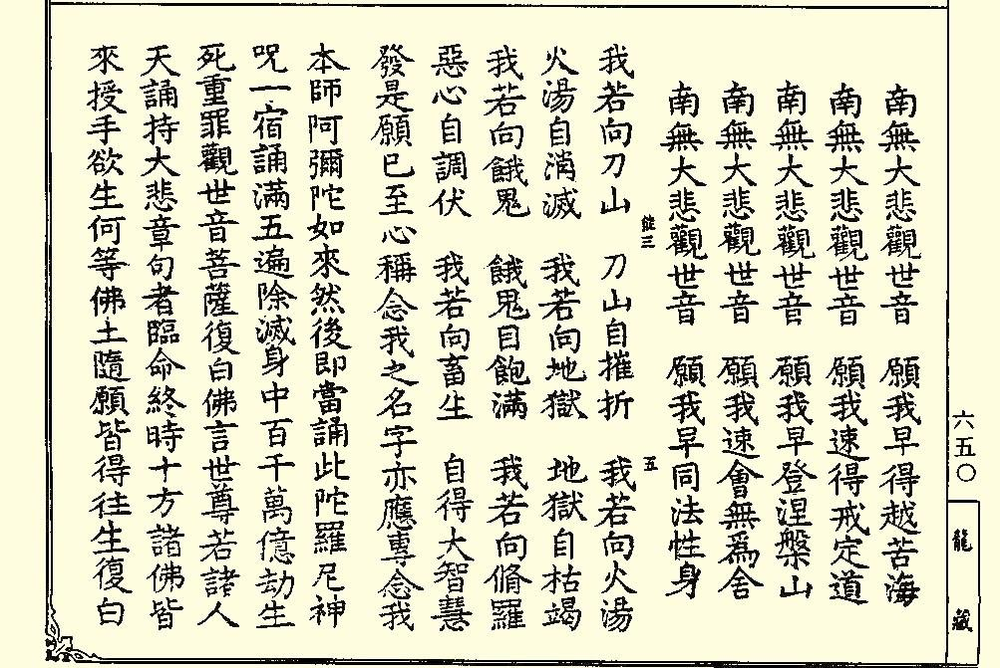
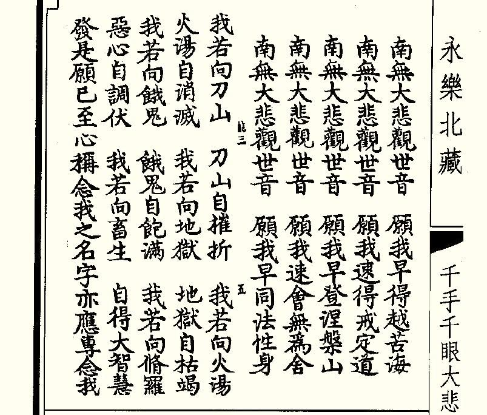
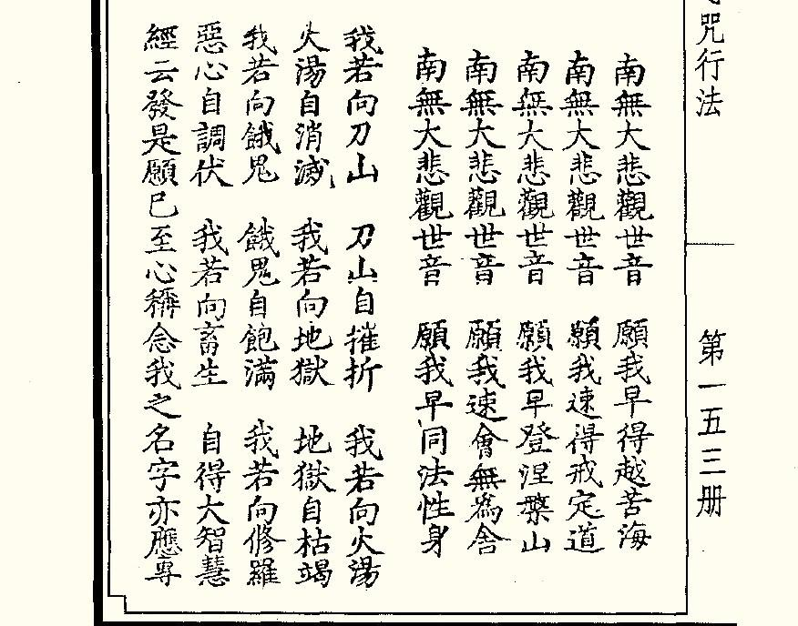

「我若向刀山，刀山自摧折； 我若向火湯，火湯自消滅；我若向地獄，地獄自枯竭； 我若向餓鬼，餓鬼自飽滿；我若向修羅，惡心自調伏；我若向畜生，自得大智慧。」
以上是《大悲心陀羅尼經》裡六組十二句用來降伏阿修羅及救度下三塗眾生的大威神力偈誦；若專心與《大悲心陀羅尼》一起持念無間，日久自得箇中靈妙！

清《乾隆大藏經》原經文
現在坊間流通的某些《大悲懺》版本及網上流傳很多的懺文電子檔：「我若向火湯，火湯自消滅；我若向地獄，地獄自枯竭……」這四句偈誦當中，有兩句一直存在著錯誤，以致後來印送《大悲懺》的善心人士，依照錯誤的舊懺本一再複製流通下去而未知更正。
《大悲懺》在各種大藏經中全稱《千手千眼大悲心咒行法》、《千手眼大悲心咒行法》或《千手眼大悲心咒儀式》，為宋朝四明尊者知禮大師根據《大悲心陀羅尼經》當中的義理所編集而成，後人拜懺一直沿用至今。
《千手千眼大悲心咒行法》除了明版《嘉興大藏經》、清版《乾隆大藏經》、日本人所編的《大藏新纂卍續藏經》及中國內地所編的《中華大藏經》外，在歷代眾多有收載此懺法的大藏經中，這四句偈誦：「我若向火湯，火湯自消滅；我若向地獄，地獄自枯竭。」都是如此記載的。但在《嘉興大藏經》、《乾隆大藏經》、《大藏新纂卍續藏經》、《中華大藏經》及坊間流通的某些懺文版本當中，這四句偈誦卻是：「我若向火湯，火湯自枯竭；我若向地獄，地獄自消滅。」恰恰「消滅」和「枯竭」兩組詞語就和其他大藏經中的記載倒轉過來了。
明版《嘉興大藏經》收有此懺法的兩個版本，分別是第一冊的《千手眼大悲心咒行法》及第十九冊的《千手千眼大悲心咒行法》。第一冊的《千手眼大悲心咒行法》，這四句偈誦內容和其他各藏沒有什麼不同，但十九冊的《千手千眼大悲心咒行法》，偈誦內容又倒轉過來了。
清版的《乾隆大藏經》在第三十九冊收錄了《千手千眼觀世音菩薩廣大圓滿無礙大悲心陀羅尼經》，在一百三十五冊中收錄了《千手眼大悲心咒行法》，但同一藏行法中的四句偈誦內容跟經文偈誦內容亦一樣倒轉過來。
《中華大藏經》第十九冊收錄了同一譯師的兩個同名經文，一種名《千手千眼觀世音菩薩大圓滿無礙大悲心陀羅尼經》，另一種多了別本二字。同藏第一百零五冊收錄《千手眼大悲心咒行法》一部，但偈誦中兩組詞語倒置的情況亦跟《乾隆大藏經》相同。
在後來的佛教著述當中，如清代行悅法師所著的《列祖提綱錄.卷第二十》，曾引用這四句偈誦，兩組詞語內容亦同樣倒置了；這說明四句偈誦可能在明朝或更早的時候已被誤寫及誤傳開來。後人在印製流通《大悲懺》的時候，如果用了《嘉興藏》第十九冊或日本《大藏新纂卍續藏經》及坊間流通的錯誤版本而不加分辨的話，就會一錯再錯了。
追本溯源，這四句偈原本出自唐朝伽梵達摩法師所譯的《佛說千手千眼觀世音菩薩廣大圓滿無礙大悲心陀羅尼經》；經過和各朝藏經校對勘正，「我若向火湯，火湯自消滅；我若向地獄，地獄自枯竭。」這四句偈誦的內容都完全一致而毫無疑問。

明《永樂北藏》原經文
「我若向火湯，火湯自枯竭；我若向地獄，地獄自消滅。」其實若四句偈誦中兩組詞語倒轉了，其意思亦可解通；就算我們一向念了錯誤的版本，如果在念經文及拜懺的時候心誠意切，一樣會感應如響而能滅罪消業生起功德力用。因為偈誦的性質不同於真言咒語陀羅尼，真言咒語陀羅尼具有佛菩薩聖眾及護法金剛等的密語密意，非凡夫能解能知；若真言咒語陀羅尼音韻或句數念錯念少的話，就會或多或少影響其功效的完全發揮了。
佛說的經律及祖師的論典都不可擅改一字，否則其過至大，但亦不能完全盲目信受經文。因為大藏經在歷代編制、雕刻、收錄及抄傳中某些經文內容都有可能存在著錯誤的地方或收入偽經；所以我們在研究閱讀佛經的時候，對某些認為可疑的經文，就一定要以極度的恭敬心細細求證，這樣才能更好地保護自己的修學、衛護正法的繼續流通傳揚。

明《永樂北藏》原懺文
所以希望各位同修以後在印贈《大悲心陀羅尼經》及《大悲懺》的時候，敬請看清楚這四句偈誦是否就是正確無誤的內容版本？
佛法從謙卑恭敬中求，生死亦從智慧中得以解脫；所以在修行中一切都要謹慎而行，細加思量分別，方能免入邪知邪道。
衷心祝願各位可快速領悟《千手千眼觀世音菩薩廣大圓滿無礙大悲心陀羅尼經》中的微妙真義，早日得證大悲十種佛心。
朱明高月文殊摩詰於紵麻蘭若
个人信息
博文分类
- 全部博文(1126)
- 談師兄修行話(325)
- 慧岸明燈文集(286)
- 首楞嚴經研究(23)
- 佛學講座文字版(74)
- 答疑解惑(108)
- 佛學菁華(56)
- 生活佛法(86)
- 韋陀菩薩專題(29)
- 五教同參(18)
- 藥師七佛法專題(4)
- 寶篋印經研究(9)
- 大悲心經研究(24)
- 穢跡金剛法專題(3)
- 孔雀明王法專題(6)
- 佛法科學(5)
- 唐朝密宗(3)
- 西密蓮花生上師法教(0)
- 白衣神咒研究(0)
- 佛母大準提法專題(3)
- 不動明王法專題(0)
- 妙法蓮華經研究(2)
- 聖賢學問(2)
- 大白傘蓋佛母法專題(1)
- 佛頂尊勝陀羅尼法要義(8)
- 摩利支天菩薩法門研修(3)
- 二十一度母救世密法(0)
- 金剛般若經研究(2)
- 談師兄評說(5)
- 佛曲知音(11)
- 詩詞寄意(19)
- 聲影傳佛意(1)
- 正法圖說(16)
- 書信文章手稿(0)
- 龍鬚楮白(4)
- 最新通報(5)
- 法寶相贈(0)
- 各專欄下載專區(15)
- 宗教動畫下載(0)
- 真言陀羅尼咒音下載(1)
- 高山流水會知音(70)
- 谈师兄放生诗(7)
- 书籍介绍(1)
- 紵麻蘭若專欄綜合(109)
- 紵麻蘭若詩詞(35)
- 纻麻兰若读书笔记(8)